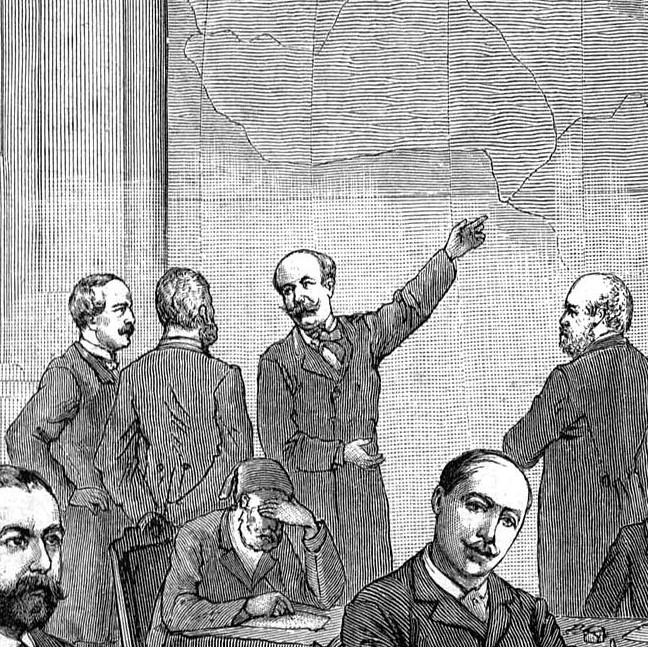

Bienvenido al sitio web oficial del Santuario Forestal de Barranquitas, ubicado en el Barrio Palo Hincado de Barranquitas, Puerto Rico.
Welcome to the official website of the Barranquitas Woodland Sanctuary, located in the Palo Hincado neighbourhood of Barranquitas, Puerto Rico.

© Copyright 2023, Barranquitas Woodland Sanctuary of Puerto Rico. Designed by Ian Adames.